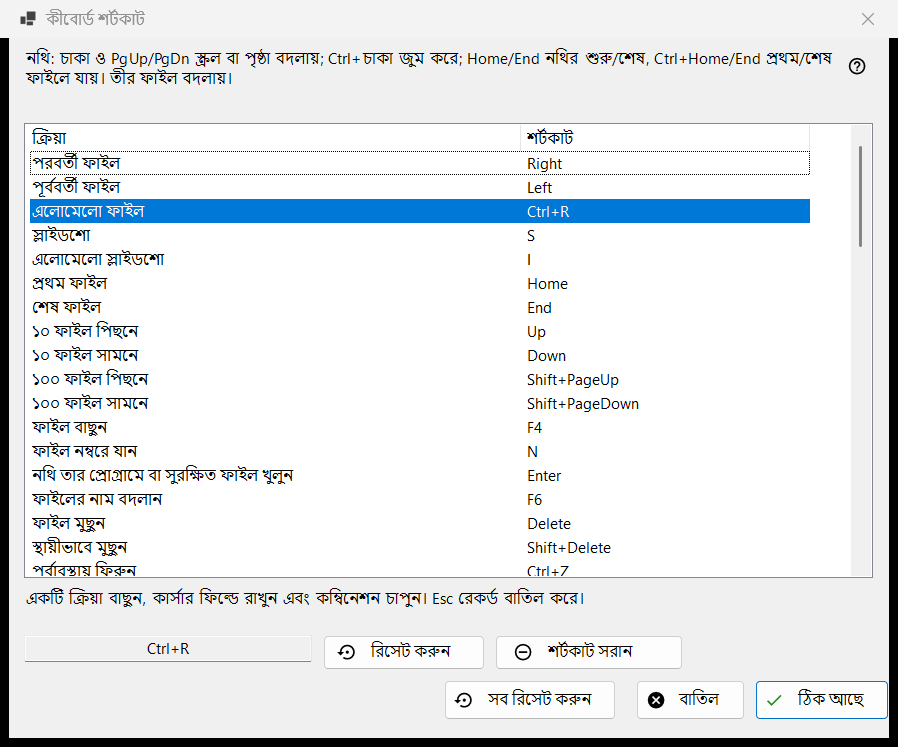
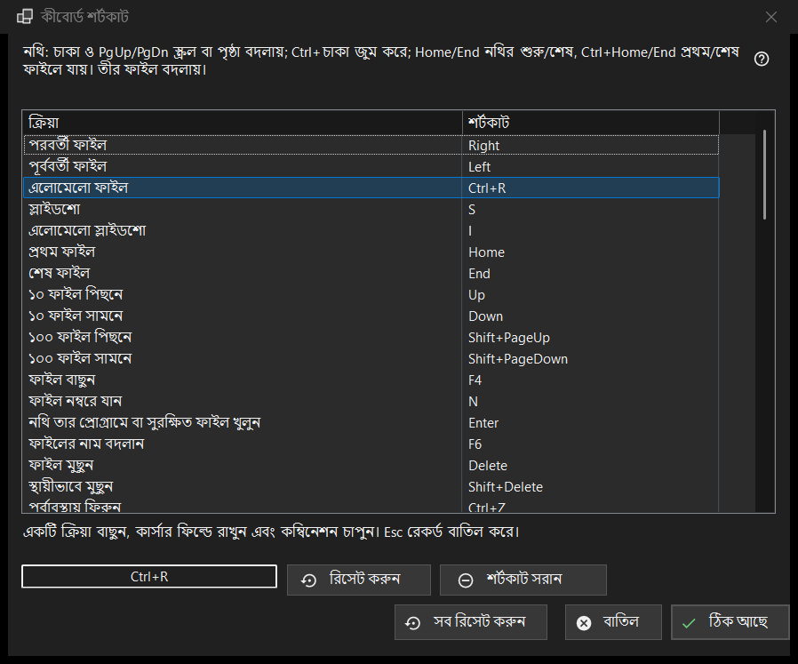

কীবোর্ড শর্টকাট
এটি কীসের জন্য
ভিউয়ারের এমন সব ক্রিয়ার তালিকা যেগুলোর কী আপনি বদলাতে পারেন, সঙ্গে এখন যে শর্টকাটে সেগুলো সাড়া দেয়। এটি সেটিংসের ফাইল ও সিস্টেম পৃষ্ঠা থেকে, কীবোর্ড শর্টকাট সারির কনফিগার করুন.. বোতাম দিয়ে খোলে। উইন্ডোটি একটি কাজের কপিতে বদল করে: ঠিক আছে চাপার আগে পর্যন্ত আপনার প্রোফাইলে কিছুই পৌঁছায় না।


এই ক্রমে
- সেটিংস খুলুন, ফাইল ও সিস্টেমে যান এবং কীবোর্ড শর্টকাট সারিতে কনফিগার করুন.. চাপুন।
- তালিকা থেকে একটি ক্রিয়া বেছে নিন।
- তালিকার নিচের ঘরে ক্লিক করুন এবং নতুন কম্বিনেশন চাপুন।
- আর কোনো ক্রিয়া ওই কম্বিনেশন আগেই ব্যবহার করলে শর্টকাট অদলবদল করুন, ওই কাজ থেকে সরান বা বাতিল বেছে নিন।
- অন্য ক্রিয়ার জন্য একই কাজ করুন; দরকার হলে রিসেট করুন, শর্টকাট সরান বা সব রিসেট করুন ব্যবহার করুন।
- পরিবর্তন রাখতে ঠিক আছে চাপুন, অথবা সব ফেলে দিতে বাতিল চাপুন।
উপাদানসমূহ
ক্রিয়া ও শর্টকাটের তালিকা
প্রতিটি সারি একটি ক্রিয়া ও তার মূল শর্টকাট দেখায়; যে ক্রিয়ার কোনো কী নেই তার পাশে নির্ধারিত নয় লেখা থাকে। দশটি ফোল্ডার স্লট ফোল্ডার 1..0-এ সরান ও ফোল্ডার 1..0-এ কপি করুন হিসেবে দেখা যায় (অঙ্ক কী সরায়, Shift-সহ ওপরের সারির অঙ্ক কপি করে)। কিছু ক্রিয়া কারখানার বাড়তি কী-তেও সাড়া দেয় (পরবর্তী ফাইল Space ও PageDown-এও সাড়া দেয়)। তালিকায় শুধু মূল কী দেখানো হয়, কিন্তু ক্রিয়াটিকে নতুন শর্টকাট দিলেই তার পুরোনো সব কারখানার কী কাজ করা বন্ধ করে দেয়। তালিকার ওপরের লেখাটি নথির জন্য স্থির কী-গুলোর নাম বলে (হুইল, PgUp/PgDn, Home/End, তীর), যেগুলো তালিকায় নেই। অ্যাকশন নির্ধারিত অপারেশন Share Manager-এর নির্ধারিত অপারেশন উইন্ডো খোলে; ডিফল্টভাবে এর কোনো কী নেই - কীবোর্ড থেকে উইন্ডো খুলতে এতে একটি কী দিন।
কম্বিনেশন রেকর্ড করা
একটি সারি বেছে নিন, তারপর তালিকার নিচের ঘরে ক্লিক করুন (বা সারিতে ডাবল-ক্লিক করুন) এবং কী চাপুন; চাইলে Ctrl, Shift বা Alt-সহ। ঘরটি পুরো কম্বিনেশন একসঙ্গে রেকর্ড করে, আর শুধু একটি মডিফায়ার কম্বিনেশন নয়। Esc কিছু রেকর্ড না করেই ঘর ছেড়ে বেরোয়। পরিবর্তনটি তালিকায় সঙ্গে সঙ্গে দেখা যায়, কিন্তু তখনো সেটি শুধু কাজের কপিতে আছে।
যে কী নির্ধারণ করা যায় না
F1, F10, F11, Esc, Windows কী, Menu কী, Alt+Tab, Alt+F4 এবং Ctrl+Alt+Delete Windows-এর বা প্রোগ্রামের। এগুলোর একটি চাপলে এই বার্তা আসে: এই কম্বিনেশনটি সিস্টেম বা প্রোগ্রামের জন্য সংরক্ষিত, নির্ধারণ করা যাবে না। কিছুই বদলায় না।
যে কম্বিনেশন আগেই নেওয়া
প্রশ্নে মালিকের নাম থাকে: কম্বিনেশন X ইতিমধ্যে অন্য ক্রিয়ার জন্য নির্ধারিত। শর্টকাট অদলবদল করুন ওই ক্রিয়াকে সেই শর্টকাট দেয় যা বর্তমান ক্রিয়ার ছিল (হয়তো কোনোটিই নয়)। ওই কাজ থেকে সরান ওটিকে নির্ধারিত নয় অবস্থায় রাখে এবং কম্বিনেশনটি আপনাকে দেয়। বাতিল কিছুই বদলায় না।
রিসেট করুন, শর্টকাট সরান ও সব রিসেট করুন
রিসেট করুন নির্বাচিত ক্রিয়াকে তার কারখানার কী-তে ফিরিয়ে দেয়। শর্টকাট সরান ক্রিয়াটিকে কোনো কী ছাড়াই রেখে দেয়, তাই তার কারখানার কী-ও কাজ করা বন্ধ করে দেয়; কোনো কী বন্ধ করতে এটি ব্যবহার করুন। সব রিসেট করুন জিজ্ঞাসা করে: সব শর্টকাট ডিফল্টে ফিরিয়ে আনবেন? ডিফল্টে ফেরান উইন্ডোর মধ্যে আপনার সব পরিবর্তন মুছে দেয়; বাতিল সেগুলো রেখে দেয়।
ঠিক আছে ও বাতিল
ঠিক আছে পুরো ম্যাপটি প্রোফাইলে সংরক্ষণ করে এবং ভিউয়ার সেটি সঙ্গে সঙ্গে ব্যবহার করে। বাতিল উইন্ডো বন্ধ করে এবং প্রোফাইলকে ঠিক আগের মতোই রেখে দেয়। ভিডিও ও অডিওর কী (বিরতি, মিউট, ভলিউম, সিক, গতি, ফ্রেম-ধাপ, ট্র্যাক) যে মিডিয়া চলছে তার ওপর কাজ করে।